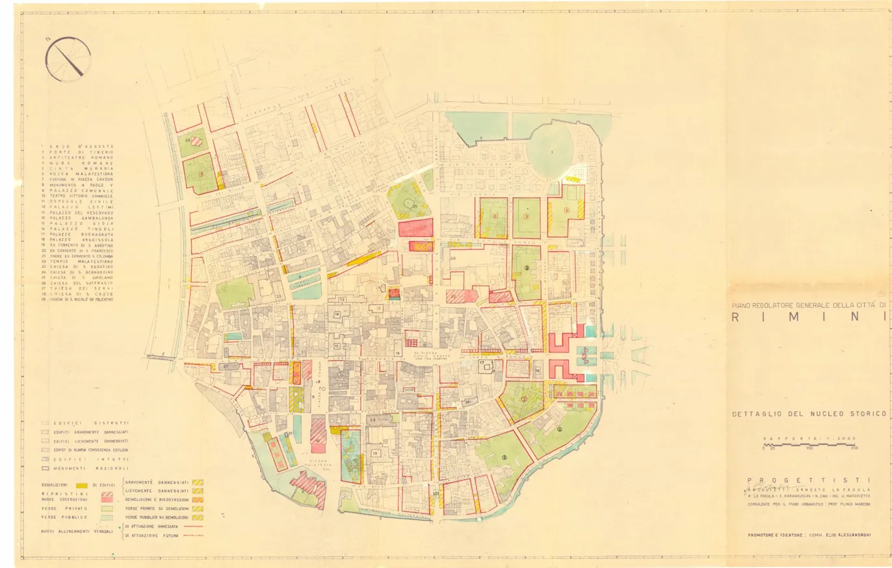
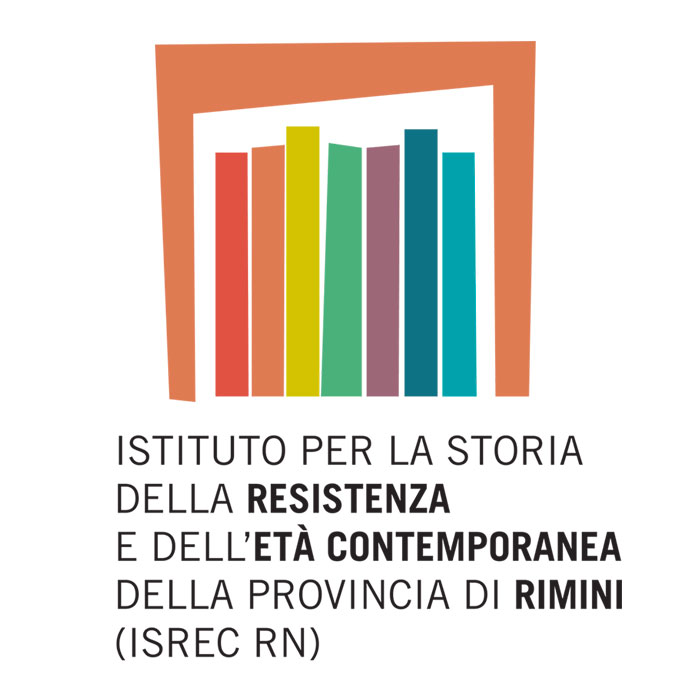
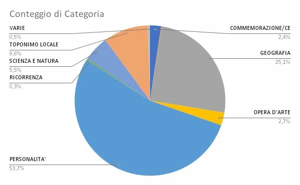

ISREC · SIT · Biblioteca GambalungaPublic history, GIS and StoryMaps: three weeks in Rimini between archives, digital maps and urban onomastics.
A public history FSL project transforming Rimini's street directory into an interactive journey. The goal: classify street dedications by historical category and map them in a public digital StoryMap on the Municipality's SIT portal.

«The experience is stimulating and I am enjoying it because it allows me to see how technology (GIS) can breathe new life into local history, making it accessible to everyone through interactive maps.»
Working on themes like the partisan struggle and the colonial past through digital maps helped me understand how urban geography is deeply linked to historical events. Street names are not just labels — they are small monuments.
A special lecture open to Year 5 classes by historian Enrico Miletto: an in-depth discussion on the effects and consequences of World War II on Rimini. I was fortunate to participate as the only lower-year student.
«I found the conference extremely engaging. I particularly enjoyed expressing my creativity by making the video, making this FSL experience not just about archiving but also about active communication.»
Before the conference, I was entering names into a database. Afterwards, I was entering people. Every name became connected to real events, real suffering, and real courage.
«This final phase taught me the importance of precision: a database is only useful if the data is correct and well-organised.»
Precision in historical work is not just about avoiding mistakes — it's about respecting the people whose stories you are telling.
The General Urban Plan of Rimini highlights the historic centre we worked on. Every street has a story: our StoryMap tells it — making history accessible to everyone.
I am happy to answer any questions.
Special thanks to Alberto Gagliardo, Gianluca Calbucci, Alberto Vanni Lazzari and all the staff at ISREC, Gambalunga Library and SIT.
Dieng Penda — Class 4° G
ITTS «Belluzzi – Da Vinci» · Rimini · A.Y. 2025/2026